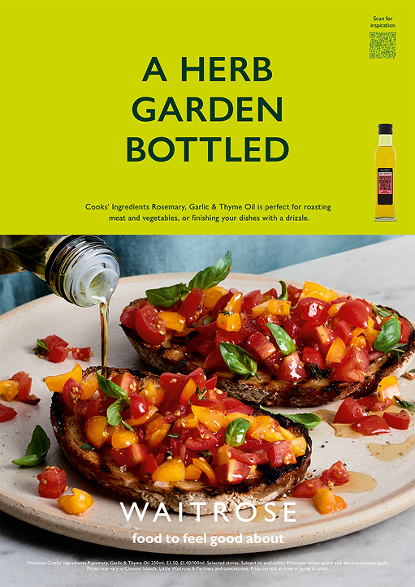
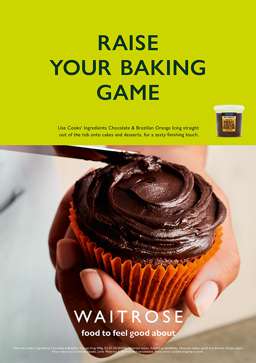
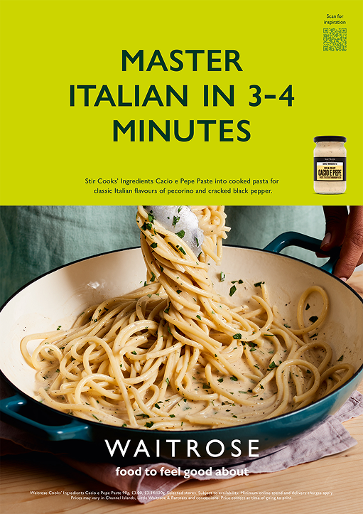
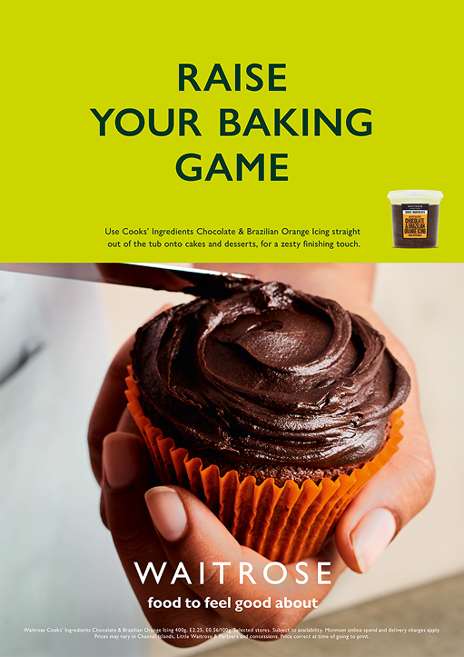
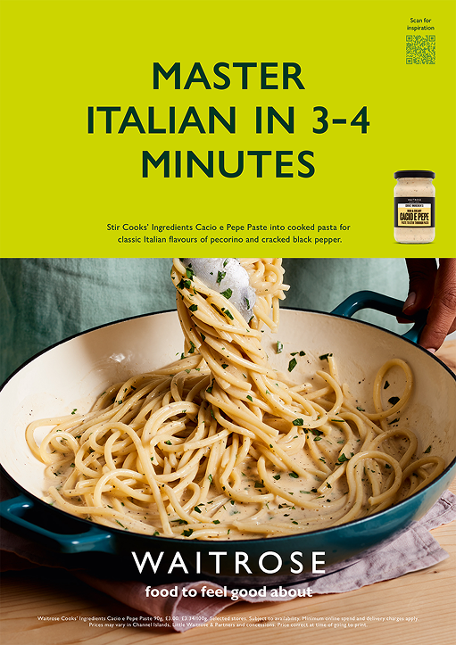
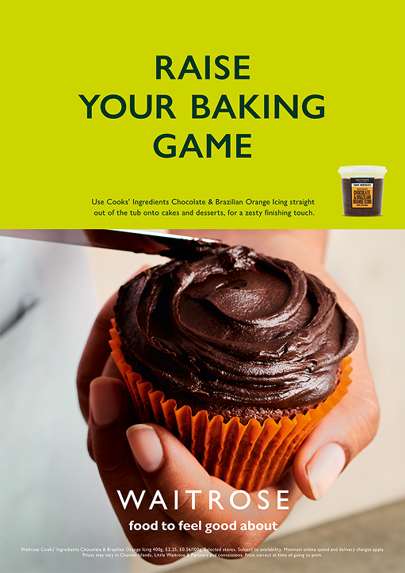
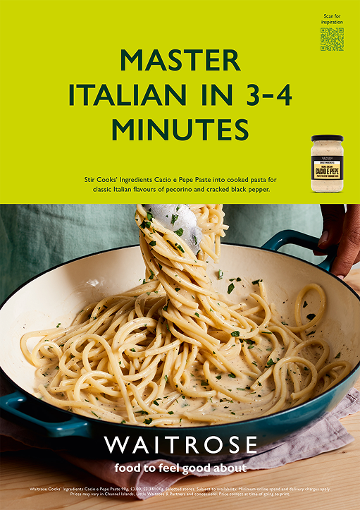
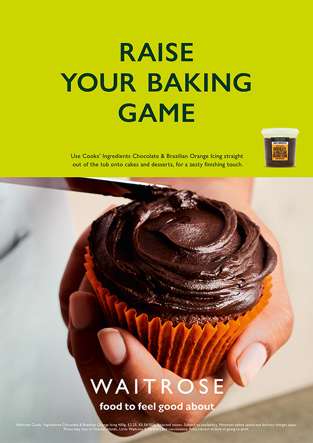
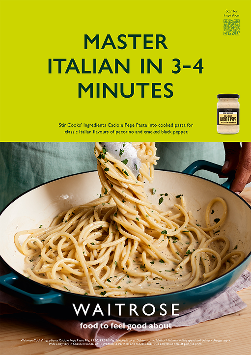

 






This project was a campaign for Great Western Railway, celebrating the nostalgia and joy of travel with a modern twist. I was involved in creative development, shoot production, and post-delivery, collaborating with an amazing team and client.


Agency: adam&eveDDB
Creatives: Frances Leach & Chris Bowsher
Photographer: Issy Crocker
Production: Richard Bailey
Account Team: Jono Shaw & Scarlett Aldridge